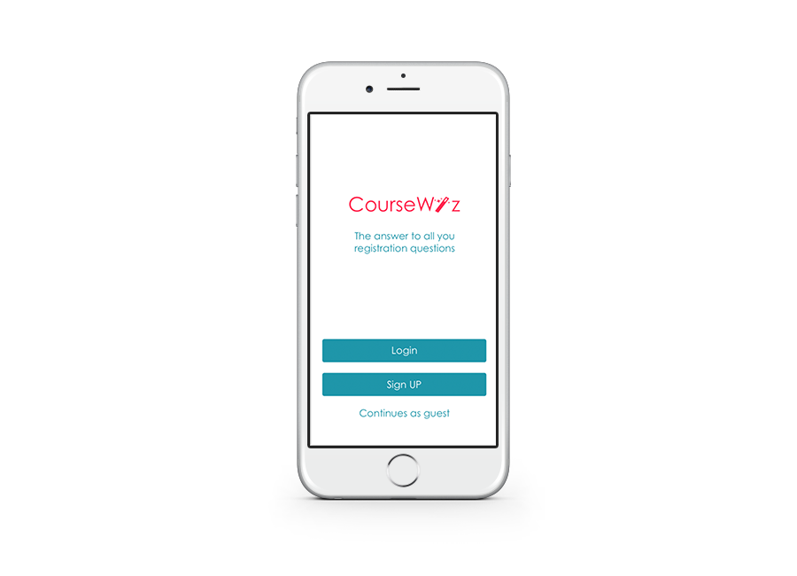
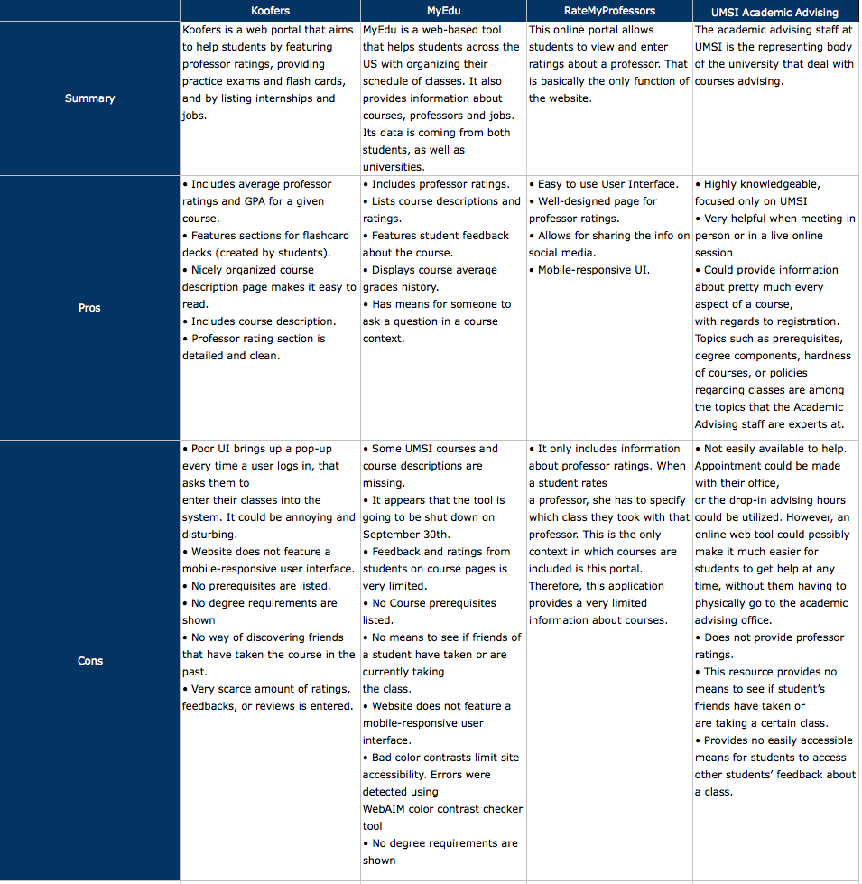

- Date: September 2016 - Present
- Role: UX Researcher/Designer
- Work Setting: Individual
Course Wiz is a tool that helps UMSI students pick the right classes during registration. It strives to mitigate any anxiety and stress that a student might have during the process. The tool addresses the problems related lack of peer support, incomplete faculty profiles and missing course data.
Students have to register for classes each semester. Being able to select the right classes is very important to students and is crucial to their academic success. However, the course selection process could be a difficult and stressful process. There are many classes offered by UMSI, permitting students the valuable freedom of choice. Yet, too many choices also makes it harder for a student to compile their schedule because they must consider a multitude of options and outcomes, while in some cases knowing little details about specific courses. I want to address these issues by developing a web application that gives UMSI students insights into crucial decision-making course details and background information that would help them pick appropriate courses with less efforts.
The discovery process involved talking to students in order to understand problems and concerns that they might have. Students told me that they have issues while trying to register for classes.
Once the problem definition was formed and the discovery phase was done, I conducted a competitive analysis, in order see if there are effective tools already addressing this issue. I identified the following competitors and alternatives to my potential solution: Koofers, MyEdu, RateMyProfessors and the UMSI Academic Advising.

As a result of my conversations and research, I was able to develop target personas.

I started brainstorming ideas in search of possible solutions. I started sketching possible approaches. Once I had my sketches, I started talking to stakeholders and showed them my sketches. The results from this activity helped me verify ideas and debunk wrong assumptions.
After getting valuable feedback, I developed storyboards out of my initial sketches.
I met with users once again and this time showed them my storyboards. I also interviewed them in a semi-structured manner. Some of the questions from my interview protocol are listed below:
- Do you mind if I make a recording in case I miss something?
- Which courses are you taking this semester?
- Can you quickly walk me through the process that you went through when picking which classes to take this semester?
- Did you talk to advising?
- Looking at tracking and planning sheet?
- Did you meet academic advising?
- Did you talk to other students?
- Are you interested to know what other students are taking?
- Are you comfortable other students seeing what courses you are taking? Exact Section?
- Looking at tracking and planning sheet?
- Would you provide your grades to app admins so that it could be used for showing class grade averages?
- Before signing up for a class, do you do any lookup of the professors?
- What information do you think might be valuable to you?
- What about class average grades or student dropping the class ratio?
I created QOC diagrams, in order to aid the design process and make decisions. Sample diagrams are shown below.
Finally, I created an interactive digital prototype of my solution.